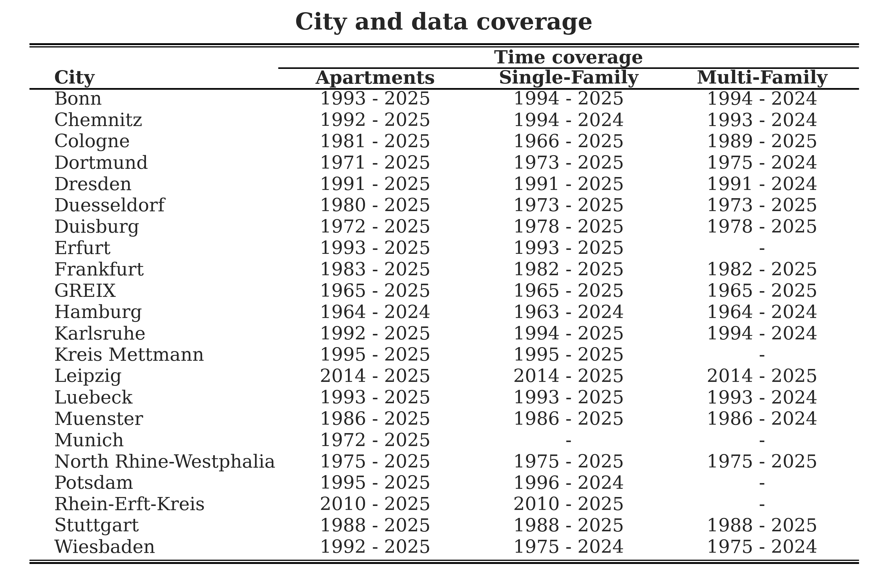
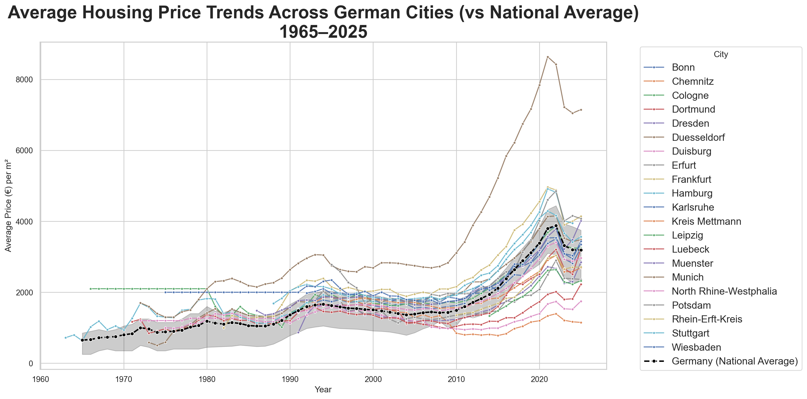
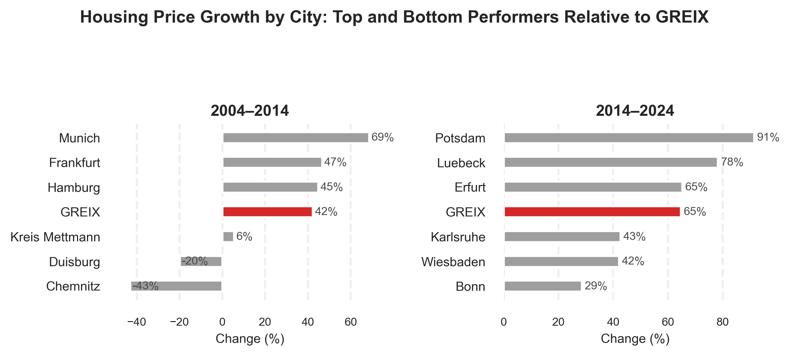
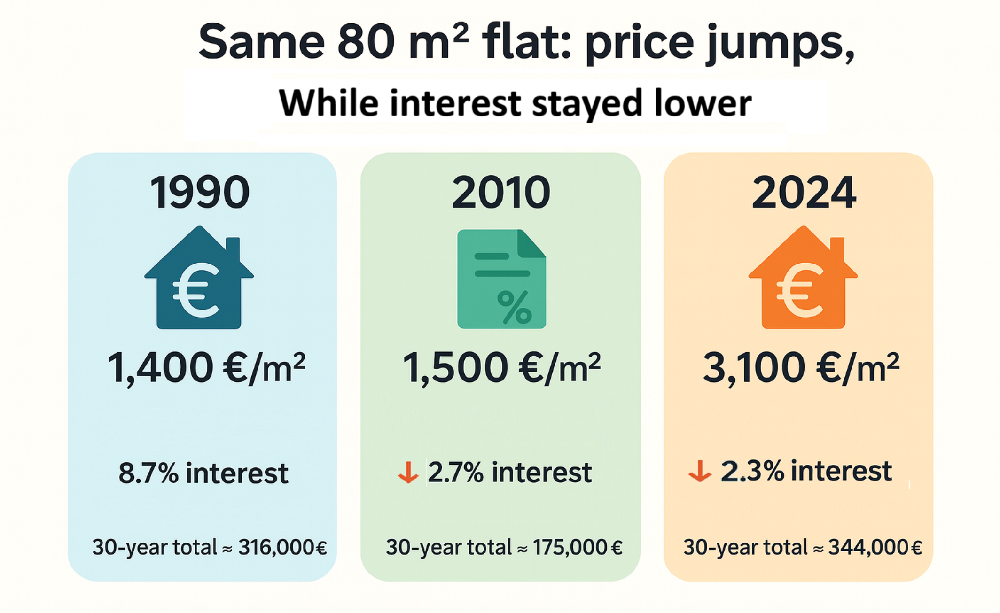

Using housing price data from 1964 to 2025 for around 21 German cities, we analyze long-term developments in the German housing market. The data include different property types, namely apartments, single-family houses, and multi-family houses, and show varying time coverage across cities. This allows us to compare long-term trends across regions as well as more recent price developments.
The analysis compares housing price trends at the city level with the national housing price index (GREIX). In addition, housing price movements are related to selected macroeconomic indicators, including GDP growth, long-term interest rates, and unemployment changes. This approach helps to examine whether housing prices mainly follow general economic conditions or whether regional differences have increased over time.
The results show that housing prices across German cities followed a broadly similar trend until the early 2000s. From around 2010 onwards, price developments begin to differ strongly across cities. Several cities show much stronger price growth than the national average, while others experience weaker growth or stagnation. Differences across property types are also visible, with apartments and single-family houses generally showing stronger growth than multi-family houses.
The comparison with macroeconomic indicators suggests that housing price growth cannot be explained by economic growth alone. Strong price increases are observed during periods of low interest rates and declining unemployment, while recent price corrections indicate a higher sensitivity of housing prices to changing financial conditions. Overall, the analysis points to increasing regional and structural differences in the German housing market over time.
Housing prices change over time and are influenced by economic conditions such as income, interest rates, and employment. Over long periods, even small differences in regional conditions can lead to large differences in housing prices across cities. Changes in financial conditions and household behavior can therefore have an important impact on housing markets.
An interesting question is, how the German housing market has changed over time? Have housing prices developed similarly across cities, or have differences increased? One may think of effects in both directions: National trends such as economic growth and monetary policy affect all regions and may lead to similar housing price developments across cities. On the other hand, local factors such as population growth, housing supply, and urban demand may cause some cities to become much less affordable than others.
A second question concerns the role of economic conditions. Do macroeconomic factors help explain housing price changes? Again, effects in both directions are possible: Low interest rates, rising GDP, and declining unemployment can increase housing demand and push prices upward.
At the same time, housing prices may rise even when economic growth is weak, suggesting that prices are not driven by economic factors alone.
This data analysis uses housing price data from 1964 to 2025 for around 21 German cities and compares city-level price trends with the national housing price index (GREIX). In addition, data on GDP, long-term interest rates, and unemployment are used to study the relationship between housing prices and economic conditions.
3 Data
The main data source is the German Real Estate Index (GREIX), which provides historical housing price information for different cities and property types in Germany.
The dataset covers the period from 1964 to 2025, depending on the city and property type. Prices are available for three types of properties: apartments, single-family houses, and multi-family houses. Not all cities have data for all property types or for the full time period. Table 1 shows the cities included in the analysis and the corresponding time coverage for each property type.
In addition to city-level data, the national housing price index (GREIX) is used as a benchmark to compare local housing price developments with the overall German housing market.
Macroeconomic data are taken from the World Bank. These include GDP, long-term interest rates, and unemployment. The macroeconomic variables are used to examine how housing price developments relate to broader economic conditions over time.
Table 1: City and data coverage for each property type and time range. This shows which years and property segments are available for each city in the GREIX dataset (apartments, single-family and multi-family houses)
(a)

4 Analysis
The basic idea of the analysis is to compare housing price developments in individual German cities with the national housing price trend. Figure 1 shows housing price trends for selected German cities together with the national average (GREIX) over the period from 1965 to 2025.
By plotting city-level prices alongside the national average, it becomes possible to assess which cities follow the German-wide trend closely and which deviate from it. This comparison helps to identify cities with particularly strong or weak housing price growth over time.
The figure shows that housing prices across most cities broadly follow the national trend over long periods. However, clear differences across cities are visible. Munich stands out strongly, with housing prices rising far above the national average, especially after 2010. Cities such as Frankfurt, Hamburg, and Stuttgart also show price levels that are consistently above the German-wide average in recent years.
In contrast, cities such as Chemnitz, Dortmund, and Duisburg remain below the national average for most of the observed period. Other cities, including Cologne and Dresden, follow the national trend more closely, with periods slightly above or below the German-wide average.
Show code
sns.set_theme(style="whitegrid")plt.figure(figsize=(16, 8))for city insorted(yearly_prices["City"].unique()):if city =="GREIX":continue df_city = yearly_prices[yearly_prices["City"] == city] sns.lineplot( data=df_city, x="Year", y="Price", marker="o", markersize=3.5, linewidth=1.4, alpha=0.9, errorbar=None, label=city, )ifnot df_greix.empty: sns.lineplot( data=df_greix, x="Year", y="Price", marker="o", color="black", linestyle="--", linewidth=2, markersize=5, label="Germany (National Average)", )plt.title("Average Housing Price Trends Across German Cities (vs National Average)\n1965–2025", fontsize=25, fontweight="bold",)plt.xlabel("Year")plt.ylabel("Average Price (€) per m²")plt.legend(title="City", bbox_to_anchor=(1.05, 1),fontsize=14, loc="upper left")plt.tight_layout()plt.show()

Figure 1: Average housing price trends for each German city compared to the GREIX national average (1965–2025). Cities diverge most strongly after 2010, with Munich and several other large cities rising far above the national trend, while others remain below.
To allow a closer inspection of individual city developments, housing price trends are shown separately for each city in Figure 2. While the previous Figure 1 provides an overall comparison across cities, this representation makes it easier to focus on specific cities and to examine how local price developments evolve relative to the national trend.
For each city, the local housing price trend is plotted together with the national housing price index. This helps to identify periods in which city-level prices closely follow the German-wide average and periods in which they diverge. The city-specific plots confirm the general pattern observed in the previous Figure 1. Long-term housing price movements are similar across cities, but the strength of price growth differs substantially, especially in the more recent period.
Overall, the city-level plots are consistent with the results from the aggregated comparison. They confirm that Munich and several other large cities experienced particularly strong housing price growth, while other cities remained closer to or below the national trend. The main contribution of this representation is that it allows a detailed inspection of individual city trajectories without changing the overall conclusions.
Figure 2: Average housing price trends for each German city, 1965–2025. Each panel highlights one city’s trajectory, showing how some cities track the national trend closely while others diverge substantially in recent years.
After examining housing price levels and long term trends across cities, the next step is to look more closely at how fast housing prices have grown in different periods. While the previous figures show that some cities have higher price levels than others, they do not directly show whether these differences developed gradually or emerged more strongly in specific time periods.
To address this, Figure 3 compares housing price growth across cities relative to the national housing price index (GREIX). The figure focuses on two separate periods, 2004–2014 and 2014–2024, and shows the top three and bottom three cities in terms of price growth in each period. This allows for a clearer comparison of relative growth dynamics over time.
For the period from 2004 to 2014, Munich shows by far the strongest housing price growth, clearly exceeding the national average. Frankfurt and Hamburg also grow faster than the German wide trend during this period. In contrast, Kreis Mettmann shows only weak growth, and Duisburg and Chemnitz move in the opposite direction, with prices declining over the decade. These results are consistent with the earlier city-level plots, where Munich and other large cities already appeared to diverge upward from the national trend.
In the later period from 2014 to 2024, housing price growth increases substantially across most cities. However, the set of cities with the strongest growth changes. Potsdam shows the highest increase in this period, followed by Luebeck and Erfurt, all of which grow more strongly than the national average. At the same time, cities such as Bonn, Wiesbaden, and Karlsruhe exhibit weaker growth relative to GREIX. This indicates that strong housing price growth is not limited to the same cities across time and that regional dynamics can shift.
Overall, the growth comparison reinforces the earlier observation that housing price developments differ substantially across cities, especially in the more recent period. It also shows that these differences are not only visible in price levels but also in growth rates, and that the cities with the strongest growth change over time. While Munich dominates in the earlier period, other cities show stronger relative growth after 2014. This indicates that regional housing market dynamics evolve over time and are not driven by a single group of cities.
The in detail segement based analysis can be found in Appendix Figure 15
Show code
city_year = ( yearly_prices .groupby(["City", "Year"], as_index=False)["Price"] .mean() .dropna(subset=["City", "Year", "Price"]))city_year["Year"] = pd.to_numeric(city_year["Year"], errors="coerce").astype(int)wide = ( city_year[city_year["Year"].isin([2004, 2014, 2024])] .pivot(index="City", columns="Year", values="Price"))pct_table = pd.DataFrame(index=wide.index)pct_table["Pct_2004_2014"] = (wide[2014] / wide[2004] -1) *100pct_table["Pct_2014_2024"] = (wide[2024] / wide[2014] -1) *100pct_table = pct_table.dropna()def get_top_bottom(df, col): g = df.loc["GREIX", col] d = df.drop("GREIX") top3 = d[d[col] > g].sort_values(col, ascending=False).head(3) bottom3 = d[d[col] < g].sort_values(col, ascending=False).tail(3) out = pd.concat([top3, df.loc[["GREIX"]], bottom3])return out.index.tolist(), out[col].tolist()cities_0414, values_0414 = get_top_bottom(pct_table, "Pct_2004_2014")cities_1424, values_1424 = get_top_bottom(pct_table, "Pct_2014_2024")red ="#d62728"grey ="#4b4b4b"def plot_panel(ax, cities, values, title): y = np.arange(len(cities)) colors = [red if c =="GREIX"else"#9e9e9e"for c in cities] ax.barh(y, values, color=colors, height=0.45)for i, v inenumerate(values): ax.text(v +1, i, f"{v:.0f}%", va="center", fontsize=8, color=grey) ax.set_yticks(y) ax.set_yticklabels(cities, fontsize=9) ax.invert_yaxis() ax.set_title(title, fontsize=11, fontweight="bold") ax.set_xlabel("Change (%)", fontsize=9) ax.tick_params(axis="x", labelsize=8) ax.grid(axis="x", linestyle="--", alpha=0.3)for s in ax.spines.values(): s.set_visible(False)fig, axes = plt.subplots(1, 2, figsize=(8, 3.6), dpi=180)plot_panel(axes[0], cities_0414, values_0414, "2004–2014")plot_panel(axes[1], cities_1424, values_1424, "2014–2024")fig.suptitle("Housing Price Growth by City: Top and Bottom Performers Relative to GREIX", fontsize=12, fontweight="bold", y=0.98)plt.tight_layout(rect=[0, 0, 1, 0.92])plt.show()

Figure 3: Housing price growth by city: top and bottom three cities in each period (2004–2014 and 2014–2024). Growth rates are calculated as total percentage change over each decade.
Figure 4: Average housing price per m² by property type in Germany (1965–2025, GREIX composite). Apartments, single-family, and multi-family houses have diverged especially after 2010. Key periods such as the financial crisis and COVID-19 are shaded.
To assess whether the national benchmark behaves differently across segments, the GREIX series is examined by property type. When the national trend is split into apartments, single-family houses, and multi-family houses (with apartments defined as all residential properties that are neither single-family nor multi-family houses), a largely shared cycle becomes visible in Figure 4.
Across all three segments, price movements remain relatively moderate until the early 2000s. A clear acceleration then emerges after around 2010, followed by a cooling in the most recent years. The main turning points are therefore not confined to one segment, but appear to reflect broader market forces that affect housing demand and financing across the entire market.
The differences across segments are seen primarily in levels rather than timing. Apartments and single-family houses tend to reach higher price levels, especially in the later period, while multi-family house prices remain lower throughout, even though strong growth is also recorded after 2010. Overall, the national benchmark is found to move in parallel across property types, with segment-specific variation showing up more in how high prices rise than in when the cycle shifts.
Figure 5: Average yearly price growth from 2010–2024 by city and segment. Each panel shows a different property type. GREIX represents the national benchmark. Growth rates are expressed as annualized log-point changes, making city and segment differences directly comparable.
To move from price levels to growth speed, average yearly price growth from 2010 to 2024 is compared across cities and property types. The national benchmark (GREIX) is kept as a reference point, while the view is switched between apartments, single-family houses, and multi-family houses to see whether the same cities remain ahead once the housing segment changes Figure 5.
Across the three segments, a broad post-2010 expansion is visible, but the distribution of growth across cities is not identical. In the apartment view, growth is found to be strong in many locations, with several major markets positioned close to the national benchmark, while a smaller set of cities remains clearly below it. When the focus is shifted to single-family houses, growth appears more moderate overall and the ranking becomes more compressed, suggesting that differences across cities are present but less extreme than in the apartment segment.
A clearer reordering is observed in the multi-family segment. Cities that perform strongly for apartments are not necessarily placed at the top once multi-family housing is considered, and several locations emerge as stronger performers in this segment than they do elsewhere. Overall, Figure 5 reinforces the idea that divergence is shaped by both where housing is located and what type of housing is being observed: the post-2010 boom is reflected across segments, but the cities leading that growth are not the same in every part of the market.
5 Economic Factors:
5.1 Gross Domestic Product (GDP)
To relate housing price developments to broader economic conditions, housing prices are compared with Gross Domestic Product (GDP) for Germany. GDP reflects overall economic activity and income levels and is therefore a natural starting point when examining macroeconomic influences on the housing market.
Figure 6 depicts the long-term development of average housing prices together with GDP from 1965 to 2024. Both series exhibit an upward trend over time, indicating long-run economic growth alongside rising housing prices. However, the timing and strength of these developments differ. While GDP grows relatively steadily over the entire period, housing prices increase more slowly until the early 2000s and then rise sharply after around 2010. This suggests that recent housing price growth has been stronger than what would be implied by overall economic growth alone.
To better capture short-term dynamics, Figure 7 indicates year-on-year percentage changes in housing prices and GDP. This comparison reveals clear differences in volatility between the two series. GDP growth fluctuates strongly, with frequent and sometimes large positive and negative changes. In contrast, housing price growth is much smoother and shows fewer extreme movements.
Several periods of negative GDP growth do not coincide with strong declines in housing prices. In many years, housing prices continue to grow even when GDP contracts, or react only mildly. This is particularly visible in the early 1990s, the late 1990s, and around the global financial crisis. These patterns indicate that short-term housing price movements are not tightly linked to short term changes in GDP.
At the same time, sharp housing price declines tend to occur less frequently and may appear with a delay relative to economic downturns. This suggests that housing prices adjust more gradually than overall economic output. The period after 2010 stands out, as housing prices increase strongly despite relatively moderate GDP growth, while a noticeable correction appears only in the most recent years.
Overall, the GDP analysis shows that while housing prices and economic growth move in the same direction in the long run, GDP alone cannot explain short-term housing price dynamics. This indicates that additional macroeconomic factors play an important role in shaping housing price developments in Germany.
Figure 7: Year-on-year percentage changes: Housing prices versus GDP, Germany.
5.2 Interest Rates
In addition to GDP, interest rates are an important macroeconomic factor for the housing market, as they directly affect borrowing costs for households. Figure 7 compares year-on-year housing price growth with changes in long-term interest rates in Germany over the period from 1991 to 2025.
The Figure 8 shows that housing price growth and interest rate changes often move in opposite directions. Periods with declining interest rates are frequently associated with positive housing price growth, while periods with increasing interest rates tend to coincide with weaker housing price growth.
From the mid-1990s to the mid-2000s, interest rates mostly decline or remain low, while housing prices show moderate but positive growth. After 2010, housing price growth becomes stronger, while interest rate changes are generally small or negative. This period coincides with a sustained phase of low interest rates.
A particularly clear pattern appears in the most recent years. Around 2022, interest rates increase sharply, which is followed by a strong decline in housing price growth. This is the most pronounced negative change in housing prices observed in the figure. In the subsequent years, as interest rate increases slow down, housing price growth begins to recover slightly, although it remains negative.
Overall, the Figure 8 suggests a closer short term relationship between interest rate changes and housing price growth than was observed for GDP. While the relationship is not perfectly stable over time, the recent period highlights that sharp increases in interest rates are associated with strong downward adjustments in housing prices.
Labor market conditions provide another angle on housing market dynamics, since unemployment captures changes in income security and household confidence. In Figure 9, year-on-year housing price growth is placed alongside changes in the unemployment rate in Germany from 2006 to 2025, allowing the two series to be compared over the same turning points.
A clear short term link is not consistently visible. Housing prices are seen to increase in several periods even when unemployment rises, and declines in housing price growth also occur when unemployment changes remain small. The 2010s illustrate this mixed relationship well. Between roughly 2010 and 2019, unemployment mostly declines or stays stable while housing prices grow strongly, which fits the idea of a favorable economic environment. However, the pattern is not one-to-one, as housing price growth remains strong even when unemployment movements are limited.
The correction after 2022 stands out most. A sharp downturn in housing price growth becomes visible, while unemployment changes remain comparatively modest during the same period. This suggests that the size of the adjustment cannot be attributed to unemployment developments alone, and that other forces most notably financing conditions—must have been more decisive in shaping the turning point.
Overall, unemployment appears to play a weaker and less direct role in short-run housing price movements than interest rates. While labor market conditions form part of the economic backdrop, changes in unemployment on their own do not seem to account for the main shifts observed in Germany’s housing price growth.
Figure 9: Unemployment versus housing prices: Year-on-year changes, Germany, 2006–2025.
5.4 Example

Figure 10: Comparison of housing prices and financing conditions for an 80 m² flat in 1990, 2010, and 2024.
After looking at GDP, interest rates, and unemployment separately, this example illustrates how these factors come together from a household perspective.
The Figure 10 compares the price of the same 80 m² flat at three points in time: 1990, 2010, and 2024. While interest rates declined strongly over time, housing prices increased substantially. In 1990, prices were relatively low, but interest rates were high. In 2010, interest rates dropped significantly, and housing prices increased only slightly. By 2024, interest rates remained low compared to the past, but housing prices more than doubled.
As a result, despite lower interest rates, the total cost of purchasing the same flat over a 30-year period is much higher in 2024 than in earlier years. This example helps to explain why housing affordability has worsened even in a low-interest environment.
Overall, this illustrates that lower interest rates alone do not guarantee affordable housing when housing prices rise strongly. It connects the macroeconomic patterns observed earlier with real outcomes faced by households.
6 Conclusion
This analysis examined long-term housing price developments in Germany using data from 1964 to 2025 for around 21 cities and different property types. By combining city-level housing data with national indicators and macroeconomic variables, it was possible to separate general housing market trends from regional and structural differences.
The analysis showed that housing prices across German cities share a common long-term trend, but the strength of price growth differs substantially across regions. Large cities such as Munich, Hamburg, Frankfurt, and Cologne consistently exhibit higher price levels and stronger growth, while cities such as Chemnitz, Dortmund, and Duisburg remain below the national average. These regional differences have become more pronounced since around 2010.
When housing price growth was examined across different periods, it became clear that cities with strong growth change over time. While Munich dominates in earlier periods, other cities such as Potsdam and Luebeck show stronger relative growth after 2014. This indicates that regional housing market dynamics are not static and evolve over time.
The comparison across property types showed that apartments, single-family houses, and multi-family houses follow very similar overall trends. Differences between property types exist mainly in price levels and variability, but they do not substantially alter the ranking of cities. This suggests that regional factors are more important than property type in explaining long-term housing price growth.
The analysis of macroeconomic factors showed that GDP growth and housing price growth move in the same direction in the long run, but short-term housing price dynamics cannot be explained by GDP alone. Housing prices are considerably less volatile than GDP and often continue to grow during periods of weak or negative economic growth. Unemployment changes also show no strong short-term relationship with housing price growth and cannot explain major housing market turning points.
In contrast, interest rates display a clearer short-term relationship with housing prices. Periods of declining or low interest rates are associated with strong housing price growth, while sharp increases in interest rates coincide with strong downward adjustments in housing prices, most notably after 2022. This highlights the central role of financing conditions in shaping housing market dynamics.
The affordability example of a standard 80 m² flat illustrates how these factors interact in practice. While interest rates declined strongly over time, housing prices increased substantially, leading to higher total purchase costs despite lower borrowing costs. This helps explain why housing affordability has worsened even in a low-interest environment.
Overall, the results show that long-term housing price growth in Germany is shaped by a combination of regional factors and macroeconomic conditions. While economic growth and labor market conditions provide background context, interest rates play a key role in short-term housing price adjustments, and regional differences remain a defining feature of the German housing market.
7 Appendix
National Housing Market Structure and Dispersion
7.1 National Housing Market Structure and Dispersion
Figure 11: National average housing prices in Germany by property type, 1965–2025. Apartments and single-family houses have experienced the strongest long-run price growth, especially since 2010, while multi-family house prices have lagged behind.
7.2 Cross city dispersion and inequality
Show code
def ratio_most_least(d, segment, start_year=1990, end_year=2024): x = d[(d["Property_Type"] == segment) & d["Price"].notna()].copy() x = x[(x["Year"] >= start_year) & (x["Year"] <= end_year)] byy = x.groupby("Year")["Price"] out = byy.apply(lambda s: s.max() / s.min() if s.notna().sum() >=2else np.nan)return out.dropna()segments = ["Apartment", "Single-family house", "Multi-family house"]colors = {"Apartment": "#238b45","Single-family house": "#e6550d","Multi-family house": "#c61a2b",}traces = []for seg in segments: r = ratio_most_least(df, seg, start_year=1990, end_year=2024) traces.append(go.Scatter( x=r.index, y=r.values, mode="lines+markers", name=seg, line=dict(color=colors[seg], width=3), marker=dict(size=7), visible=(seg =="Apartment") ))fig = go.Figure(traces)def _title(seg_text):returndict(text=f"Ratio of Most to Least Expensive: {seg_text}", x=0.02, xanchor="left")buttons = []for i, seg inenumerate(segments): vis = [False] *len(segments) vis[i] =True buttons.append(dict( label=seg, method="update", args=[ {"visible": vis}, {"title": _title(seg)} ] ))buttons.append(dict( label="All Properties", method="update", args=[ {"visible": [True] *len(segments)}, {"title": _title("All property types")} ]))fig.update_layout( updatemenus=[dict(type="dropdown", buttons=buttons, direction="down", x=1.01, y=1.0, xanchor="left", yanchor="top", showactive=True, font=dict(size=15), )], title=_title("Apartment"), xaxis_title="Year", yaxis_title="Max / Min price", legend_title_text="Property Type", margin=dict(t=90, l=60, r=60, b=60) )fig.show()
Figure 12: Ratio of the most expensive to least expensive city for each property type in Germany, 1990–2025. Lines show how price inequality between cities has widened, particularly for apartments and multi-family houses since the 2010s.
Figure 13: City price dispersion bands, 1990–2024. The median (p50) shows the “typical” city each year, while the shaded ranges (p25–p75 and p10–p90) summarize how widely city prices are spread. A widening band indicates growing divergence across local markets.
Taken together, the Figure 12 and Figure 13 separate levels from dispersion. The Figure 13 chart shows how the “typical” city price evolves, while the shaded ranges reveal whether cities move together or fan out. From the 2010s onward, the distribution widens markedly, meaning the upswing was not uniform: some markets pulled away from the pack. The Figure 12 plot confirms that this divergence is not just a broad spread at the extremes, the most expensive city became many times pricier than the least expensive city, and the gap stays elevated even after the post-2022 cooling. The “All properties” view in Figure 12 shows the same pattern in aggregate, indicating that cross city divergence is a general feature of the period, not confined to a single segment.
7.3 Do cheaper cities catch up? Two-year ahead growth above vs below the median
Show code
def above_below_median_city_growth(d, segment="Apartment", start_year=2000, end_year=2024, horizon=2): nom = d[(d["Property_Type"] == segment) & d["Price"].notna()][["City","Year","Price"]].copy() real = d[(d["Property_Type"] == segment) & d["Index"].notna()][["City","Year","Index"]].copy() end_t =min(end_year - horizon, int(d["Year"].max()) - horizon) years =range(start_year, end_t +1) rows = []for y in years: nom_y = nom[nom["Year"] == y].copy()if nom_y["City"].nunique() <4:continue med = nom_y["Price"].median() nom_y["group"] = np.where(nom_y["Price"] >= med, "Above median", "Below median") idx_t = real[real["Year"] == y].set_index("City")["Index"] idx_f = real[real["Year"] == y + horizon].set_index("City")["Index"] g = (np.log(idx_f) - np.log(idx_t)) *100# log points tmp = nom_y.set_index("City")[["group"]].join(g.rename("growth"), how="inner").dropna()if tmp.empty:continue out = tmp.groupby("group")["growth"].mean() rows.append({"Year": y, "Above median": out.get("Above median", np.nan), "Below median": out.get("Below median", np.nan)}) res = pd.DataFrame(rows).set_index("Year").sort_index()return resres12 = above_below_median_city_growth(df, segment="Apartment", start_year=2000, end_year=2024, horizon=2)years = res12.index.to_numpy()x = np.arange(len(years))w =0.38fig = go.Figure()fig.add_trace(go.Bar( x=years, y=res12["Below median"], name="Below median", marker_color="#3471C1"))fig.add_trace(go.Bar( x=years, y=res12["Above median"], name="Above median", marker_color="#EA8C3B"))fig.update_layout( barmode="group", title="Avg Real 2-Year-Ahead Growth: Above vs Below Median Cities", xaxis_title="Year", yaxis_title="Avg growth over next 2 years", legend=dict(x=0.8, y=1.1, orientation="h"))fig.show()
Figure 14: Average real two year ahead price growth for cities above and below the median price, 2000–2024. Blue bars represent cities with below-median prices, orange bars represent those above. This plot highlights changing fortunes in the housing market after 2010, above median cities saw faster subsequent growth, but this pattern reverses after 2020.
Each year in this Figure 14 starts with a simple split: cities that are priced above the median at that time (orange) and cities below the median (blue). Then it asks one forward looking question: over the next two years, which group moves more in real terms?
In the early 2000s, there isn’t much to separate them. Both colours hover around zero and often slip below it, so the typical outcome over the next two years is flat or weak whether a city begins expensive or cheap. After 2010, the bars pull apart. For much of the 2010s, the orange bars sit higher than the blue bars, meaning the cities that were already above the median usually posted the stronger two year gains. Instead of cheaper cities catching up, the upper half often extended its lead.
The pattern shifts again around 2020. The two groups come back together and, in the latest years, both turn negative. Here the orange bars tend to drop further, suggesting that when conditions worsen, the more expensive cities often fall more, while the cheaper half sometimes holds up a bit better.
Read as a whole, the chart tells a clear arc: a quiet early period, a decade where the already expensive cities led the rise, and a recent phase where the downturn hits the top half harder.
Figure 15: City by city price trends for German residential properties 1965–2025. Each panel highlights a single city’s trajectory (bold) with all other cities shown as faint context lines. This visualization reveals both national patterns and apartment segment.
Show code
plot_city_facets(yearly_prices, segment="Single-family house", context_color="#fdbb84", focus_color="#e6550d", title="Single-Family House Price Trends by City (1965–2025)")
Figure 16: Single family house price trends by city, 1965–2025. The bold line shows the focal city’s trajectory; other cities are shown in light orange for comparison.
Show code
plot_city_facets( yearly_prices, segment="Multi-family house", context_color="#f3a4ae", focus_color="#c61a2b", title="Multi-Family House Price Trends by City (1965–2025)")
Figure 17: Multi family house price trends by city, 1965–2025. Distinct patterns emerge in cities like Dresden and Muenster, which exceed the national average in this segment.
8 Behind the Curves
This project was shaped by a question that had long been asked but rarely answered with clarity. Through the GREIX dataset, a detailed view of housing prices across German cities was made possible, revealing both national rhythms and city-specific divergences.
Macroeconomic markers were studied not to build a model, but to understand when prices moved with the broader economy and when they broke away. Each figure was crafted to let patterns emerge rather than be imposed.
The analysis was extended beyond prices. To understand the forces behind the trends, macroeconomic indicators such as interest rates, unemployment, and GDP were incorporated. These were not used to fully explain housing prices, but rather to observe when economic conditions aligned with price movements and when they diverged.
What was found was not a single story, but many, unfolding differently across cities and decades. Some moved in step, others strayed. Some rose steadily, others surprised.
This work was not built to predict. It was built to observe. And in doing so, it invites deeper questions about the forces shaping where people live, and at what cost.